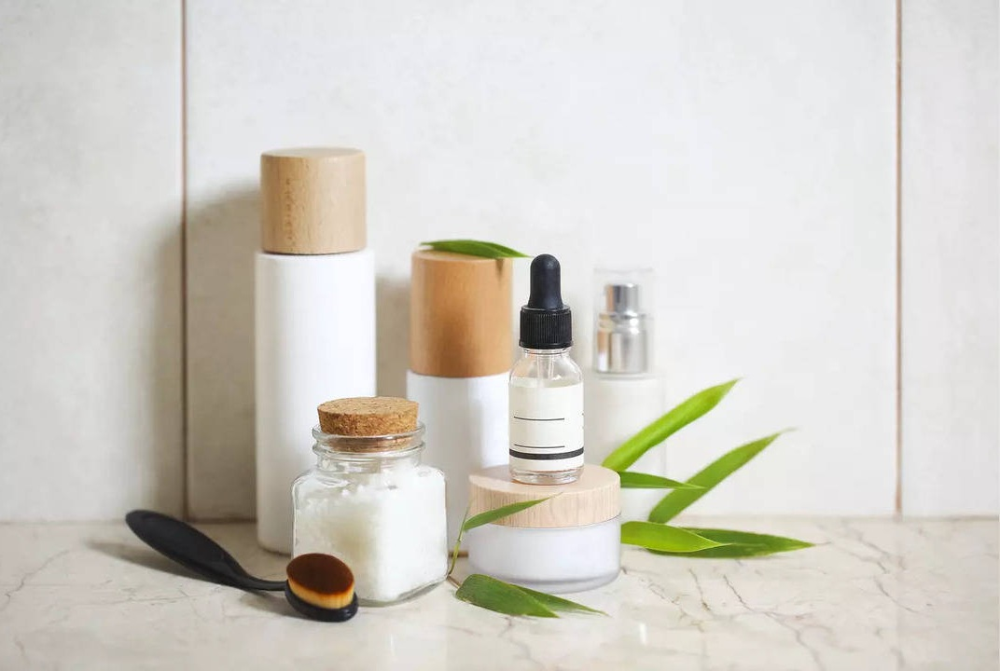

Hydrating Cleanser:
Start your routine with a gentle, hydrating cleanser that effectively removes impurities without stripping the skin of its natural oils. Look for a creamy or lotion-based cleanser formulated for dry and combination skin types. Avoid harsh ingredients like sulfates, which can further dry out the skin. Cleanse your face morning and night to refresh the skin and prepare it for subsequent skincare products.
Hydrating Toner:
After cleansing, apply a hydrating toner to rebalance the skin's pH levels and provide an extra layer of hydration. Look for a toner containing hydrating ingredients like hyaluronic acid or glycerin, which help attract and retain moisture in the skin. Apply the toner to your face and neck using a cotton pad or by gently patting it into the skin with clean hands. This step helps prepare the skin for better absorption of subsequent skincare products.
Rich Moisturizer:
Choose a rich, emollient moisturizer specifically formulated for dry and combination skin to provide deep hydration and nourishment. Look for ingredients like ceramides, shea butter, or squalane, which help replenish the skin's moisture barrier and prevent moisture loss. Apply the moisturizer evenly to your face and neck morning and night, focusing on dry areas while avoiding the T-zone to prevent excess oiliness.
Hydrating Serum or Facial Oil:
Incorporate a hydrating serum or facial oil into your routine to provide an extra boost of moisture to dry areas of the skin. Look for lightweight formulas containing ingredients like hyaluronic acid, vitamin E, or argan oil, which help hydrate, soothe, and nourish the skin without feeling heavy or greasy. Apply the serum or facial oil to clean, damp skin after toning and before moisturizing to lock in moisture and promote a healthy, radiant complexion.
Sunscreen Protection:
Finish your routine by applying a broad-spectrum sunscreen with SPF 30 or higher to protect your skin from harmful UV rays and prevent premature aging and dryness. Choose a moisturizing sunscreen formula that provides both sun protection and hydration, such as a tinted moisturizer or a sunscreen with added moisturizing ingredients like hyaluronic acid or ceramides. Apply sunscreen generously to your face and any exposed areas of skin every morning, reapplying throughout the day as needed, especially when outdoors or during prolonged sun exposure.

Products Recommended For You::

Cleanser:
- CeraVe Hydrating Facial Cleanser: This gentle cleanser contains ceramides and hyaluronic acid to hydrate and replenish the skin's moisture barrier without stripping it of its natural oils.
Toner:
- Thayers Alcohol-Free Rose Petal Witch Hazel Facial Toner: Formulated with rose water and witch hazel, this toner soothes and hydrates dry areas while balancing oil production in the T-zone.
Moisturizer:
- Neutrogena Hydro Boost Water Gel: With hyaluronic acid as its star ingredient, this lightweight gel moisturizer provides long-lasting hydration to dry areas while leaving the skin feeling refreshed and non-greasy.
Hydrating Serum or Facial Oil:
- The Ordinary Hyaluronic Acid 2% + B5: This serum combines hyaluronic acid and vitamin B5 to hydrate and plump the skin, improving its texture and reducing dryness.
- Kiehl's Midnight Recovery Concentrate: Infused with botanical oils like lavender and evening primrose, this facial oil replenishes moisture and restores radiance to dry, dull skin.
Sunscreen:
- La Roche-Posay Anthelios Melt-in Milk Sunscreen SPF 60: This sunscreen offers broad-spectrum protection against UVA and UVB rays while being non-comedogenic and suitable for sensitive skin. Its lightweight texture absorbs quickly and doesn't leave a greasy residue.